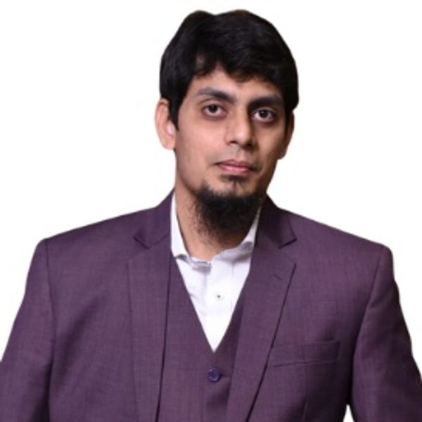

CERTIFIED SITECORE 10 .NET DEVELOPER · KARACHI, PAKISTAN
Syed Bilal builds, analyzes, and edits stories.
From enterprise platforms and clear, actionable dashboards to AI products and compelling edits—your ideas, delivered end to end.
Software Engineer
Data Analyst
AI Solutions Developer
Video & Media
6+ Years Software Engineering
8+ Enterprise Projects
Middle East & GCC Experience
Sitecore Certified

Syed Bilal Faheem
Technology Consultant · Software Engineer
SitecoreEnterprise CMS
Power BIBusiness Intelligence
Next.js + AIIntelligent Web Apps
01 About Me
One connected digital mindset
One partner across engineering, data, AI & storytelling.
Whether it’s a CMS platform, a dashboard, or content that needs to convert, you get one person who can own the whole thing end to end.
My core background is software engineering and enterprise web development. I’m a Certified Sitecore 10 .NET Developer with 6+ years of experience working on backend systems, reusable CMS modules, responsive digital platforms and content-rich websites for major organizations across the Middle East and GCC.
I also work with business intelligence and analytics using Power BI, Tableau, Excel, Python, R and databases, including financial dashboards, revenue dashboards, KPI reporting, DAX and Power Query. My independent work extends into AI-driven full-stack applications built with Next.js, Vercel, Supabase and AI APIs.
Beyond engineering and analytics, I bring 4+ years of experience in video editing and digital media management across YouTube content, short-form reels, post-production and channel support.
Engineering
Gives me the ability to build reliable digital products.
Data
Gives me the ability to understand patterns and decisions.
AI
Gives me the ability to automate and innovate intelligently.
Media
Gives me the ability to communicate with clarity and impact.
02 Core Expertise
What I Do
Four disciplines. One digital advantage.
You get joined-up thinking across enterprise development, analytics, AI and media—so the solution fits the whole problem, not just one part.
01
Software Engineering
Scalable websites, enterprise CMS platforms and reliable applications built around real business requirements.
02
Data Analytics & BI
Clear dashboards, KPI reporting and business intelligence that turn complex data into practical decisions.
03
AI & Intelligent Solutions
Purposeful AI products, intelligent workflows and automation designed to solve useful, everyday problems.
04
Creative Media
Story-led video editing, post-production and digital content shaped for clarity, attention and impact.
Projects & organizations I contributed to across the Middle East & GCC
03 Selected Work
Enterprise & Digital Projects
Built across the Middle East & GCC — and beyond.
Four flagship projects spanning enterprise engineering, public-sector digital delivery and an independent AI product.
View Full Portfolio
Explore enterprise Sitecore work, independent AI applications, Power BI dashboards and creative media projects.
04 Services
Software · Data · AI · Media
Choose the right project support for your goals.
Every engagement starts with a focused conversation and a quote based on your requirements, deliverables and timeline.
Software Projects
Reliable websites, CMS platforms and custom applications built around your workflow.
Contact for a QuoteData Projects
Power BI dashboards, reporting and analytics that turn data into clearer decisions.
Contact for a QuoteAI Solution Driven Projects
Practical AI tools, integrations and automation that help teams reduce repetitive work.
Contact for a QuoteVideo Editing Services
Story-led videos, social edits and channel support designed to connect with your audience.
Contact for a Quote05 Experience
Professional Journey
Enterprise delivery backed by hands-on engineering.
Experience across consulting, backend .NET development, enterprise Sitecore delivery, independent AI products and client-facing CMS training.
2023 — Present
Ernst & Young (EY) · Karachi, Pakistan
Technology Consultant
Contributing to development and maintenance of content-rich Sitecore websites including Dubai Culture, Honda Middle East and Abu Dhabi Sustainability Group. Responsibilities include custom modules, modular development, code reviews, new feature delivery and high-quality government CMS solutions.
2018 — 2023
The Collective (Traffic Digital & Greenlight Labs) · Karachi, Pakistan
Software Engineer Backend (.NET)
Developed and maintained Sitecore platforms for Dunlop, Falken Tyres, Honda Middle East, Department of Energy, Department of Health, Leejam Fitness and Al-Ghanim. Implemented templates, layouts, renderings and custom modules while collaborating across design, development and QA.
Independent Work
AI-Driven Full-Stack Development
Freelance & Product Projects
Building high-performance web applications with Next.js, Vercel, Supabase and AI APIs, including financial analytics, travel planning and intelligent tracking applications.
06 Technical Toolkit
Technology Stack
A practical stack for enterprise, analytics & intelligent products.
CMS
SitecoreKenticoSitefinityWordPressMVC 5LINQEntity FrameworkASP.NET MVCJavaScript / jQuery
Languages
C++C#Java (Basic)PythonRJavaScript
Data
Power BITableauExcelAdvanced DAXPower QueryFinancial DashboardsRevenue DashboardsKPI ReportingMySQLOracle 10GSSMSVisual StudioAnacondaJupyter / ColabR Studio
AI
ReactNext.jsTailwind CSSFramer MotionGSAPVercelSupabaseAI APIsGenerative AIAutomationIntelligent Workflows
07 Credentials
Certifications & Education
Built on continuous learning and delivery.
Sitecore 10 .NET Developer Certification
Professional certification validating expertise in building scalable enterprise digital experiences on the Sitecore Experience Platform, including Helix principles.
Power BI — Advanced DAX & Power Query
Certified proficiency in advanced Data Analysis Expressions (DAX) and Power Query (M Code) for scalable Business Intelligence solutions in Power BI.
Bachelor of Science, Computer Science
Iqra University · Karachi, Pakistan
CMS Training
Conducted CMS training sessions for Sitecore clients, supporting effective platform use and content operations.
08 Awards
Selected Recognition
Milestones that mark creative growth & trust.
Recognition for story-first editing, consistent delivery and sharing practical industry experience with emerging creators.
09 Creative Media
4+ Years in Video & Media
Technical thinking, translated into visual storytelling.
My creative work spans long-form YouTube videos, short-form social content, reels, post-production and complete channel support.
YouTube Editing
Long-form editing focused on clarity, pace, retention and polished post-production.
Short-Form & Reels
Fast, concise vertical content designed for social platforms and audience attention.
Media Management
End-to-end support across content handling, publishing workflows and channel organization.
Engineering gives me the ability to build.
Data gives me the ability to understand.
AI gives me the ability to innovate.
Creative media gives me the ability to communicate.
I bring all four together to create digital experiences built with purpose.
Start a Conversation
Have an idea? Take it from concept to launch.
Bring the brief, the challenge or the rough idea—you’ll get a clear plan, joined-up execution and a finished result built around your goals.